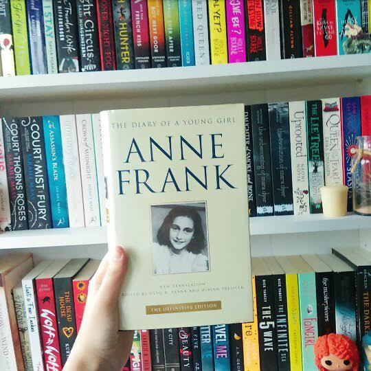

Synopsis

Anne had expressed the desire in the rewritten introduction of her diary for one person that she could call her truest friend, that is, a person to whom she could confide her deepest thoughts and feelings. She observed that she had many "friends" and equally many admirers, but (by her own definition) no true, dear friend with whom she could share her innermost thoughts. She originally thought her girl friend Jacque van Maarsen would be this person, but that was only partially successful. In an early diary passage, she remarks that she is not in love with Helmut "Hello" Silberberg, her suitor at that time, but considered that he might become a true friend. In hiding, she invested much time and effort into her budding romance with Peter van Pels, thinking he might evolve into that one, true friend, but that was eventually a disappointment to her in some ways, also, though she still cared for him very much. Ultimately, it was only to Kitty that she entrusted her innermost thoughts.
In her diary, Anne wrote of her very close relationship with her father, lack of daughterly love for her mother (with whom she felt she had nothing in common), and admiration for her sister's intelligence and sweet nature. She did not like the others much initially, particularly Auguste van Pels and Fritz Pfeffer (the latter shared her room). She was at first unimpressed by the quiet Peter; she herself was something of a self-admitted chatterbox (a source of irritation to some of the others). As time went on, however, she and Peter became very close, though she remained uncertain in what direction their relationship would develop.
Total Books in the Series:

There are two versions of the diary written by Anne Frank. She wrote the first version in a designated diary and two notebooks (version A), but rewrote it (version B) in 1944 after hearing on the radio that war-time diaries were to be collected to document the war period. Version B was written on loose paper, and is not identical to Version A, as parts were added and others omitted.